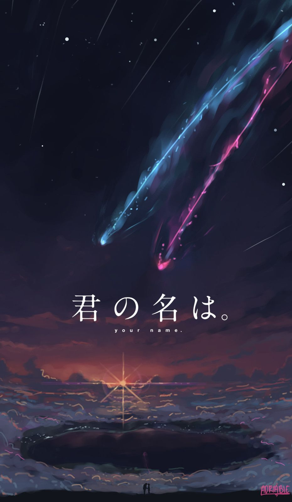
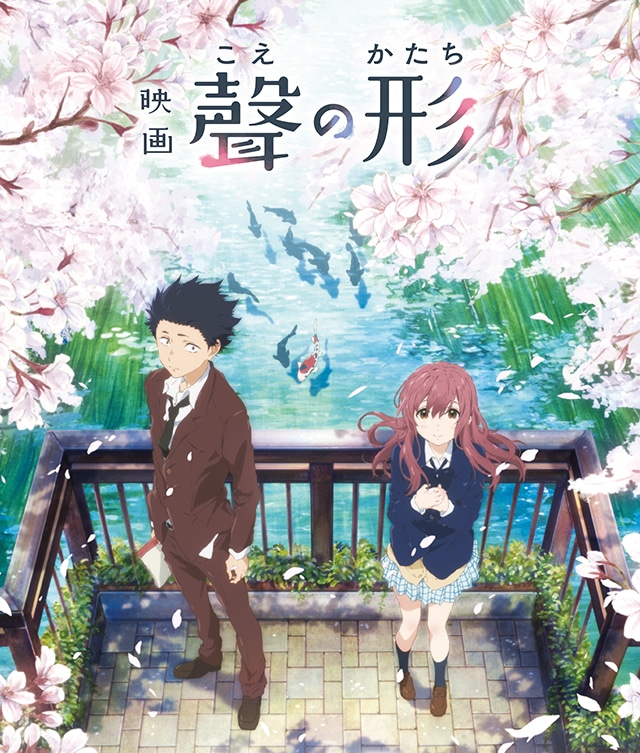

Kimi No Na Wa (Your Name)

Film garapan sutradara Makoto Shinkai ini memiliki grafis yang sangat wow. Selain grafis,film ini juga
memiliki soundtrack dan cerita yang sangat bagus.
Mitsuha Miyamizu, seorang siswi sekolah menengah atas yang tinggal di desa fiktif bernama Itomori di daerah
pegunungan Hida Prefektur Gifu, mulai bosan dengan kehidupannya di pedesaan tempat dia lahir dan berharap
dapat terlahir menjadi pemuda tampan yang hidup di Tokyo pada kehidupan selanjutnya. Kemudian, Taki
Tachibana, seorang siswa sekolah menengah atas yang tinggal di Tokyo, terbangun dari tidurnya dan menyadari
bahwa dirinya adalah Mitsuha, yang entah bagaimana bisa masuk ke dalam tubuh Taki.
Taki dan Mitsuha menyadari bahwa mereka berdua saling memasuki tubuh satu sama lain. Mereka mulai
berkomunikasi satu sama lain dengan saling meninggalkan catatan di kertas maupun melalui memo di ponsel
mereka. Seiring dengan berjalannya waktu, mereka semakin terbiasa dengan pertukaran tubuh ini serta mulai
mencampuri kehidupan satu sama lain. Mitsuha membantu Taki untuk menjalin hubungan dengan seorang wanita
rekan kerjanya yang bernama Miki Okudera, sehingga akhirnya Taki dapat berkencan dengan Miki. Sementara itu,
Taki membantu Mitsuha agar lebih dikenal di sekolahnya.
Tenki No Ko (Weathering With You)

Film yang dibuat oleh Makoto Shinkai ini juga menjadi film paling ditunggu di tahun 2019, setelah
kesuksesannya di film Kimi No Na Wa
'Weathering with You' memang memiliki cerita yang lebih rapi. Makoto juga mengembangkan permasalahan jadi
lebih kompleks dengan menambahkan konflik hukum, ekonomi serta pekerjaan dalam film terbarunya. Tak hanya
itu, pemeran pendukung juga memiliki porsi yang lebih banyak dan berpengaruh dalam alur film. Namun
pengembangan tersebut tak membuat alur cerita menjadi rumit. Setelah menonton hingga akhir, jalur cerita
'Weathering with You' malah terasa lebih sederhana.
Tak lupa, sepanjang film Makoto menyelipkan humor yang segar. Selain itu, ada juga kejutan di film ini.
Akan tetapi nyatanya keunggulan dari segi bobot cerita kurang berimbang dengan faktor emosi. Lagu pengiring
yang mestinya bisa berperan dalam membangun emosi justru terasa tak sanggup melaksanakan tugasnya.
Koe No Katachi

Sebagai pemuda liar, siswa sekolah dasar Shouya Ishida berusaha untuk mengalahkan kebosanan dengan cara yang
paling kejam. Ketika Shouko Nishimiya yang tuli pindah ke kelasnya, Shouya dan anggota kelasnya yang lain
menggertaknya untuk bersenang-senang. Namun, ketika ibunya memberitahu sekolah, dia dipilih dan disalahkan
atas semua yang dilakukan padanya. Dengan Shouko pindah dari sekolah, Shouya ditinggalkan oleh belas kasihan
teman-teman sekelasnya. Dia tanpa perasaan dikucilkan di seluruh sekolah dasar dan menengah,
sementara para guru menutup mata.
Sekarang di tahun ketiga sekolah menengahnya, Shouya masih terganggu oleh kesalahannya sebagai anak muda.
Dengan tulus menyesali tindakannya di masa lalu, ia memulai perjalanan penebusan: untuk bertemu Shouko
sekali lagi dan menebus kesalahan.
Koe no Katachi menceritakan kisah yang mengharukan tentang reuni Shouya dengan Shouko dan upayanya yang
jujur untuk menebus dirinya sendiri, sambil terus dihantui oleh bayangan masa lalunya.